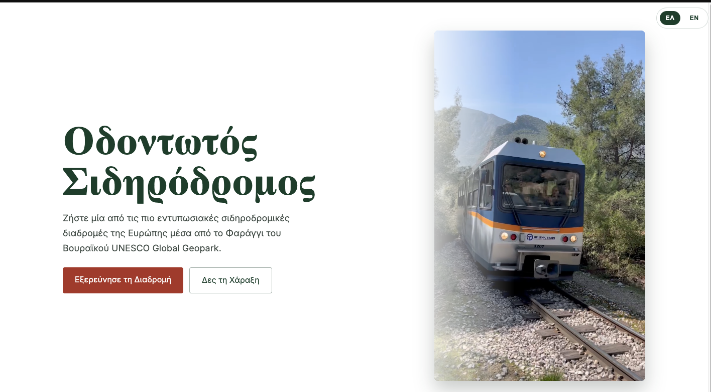
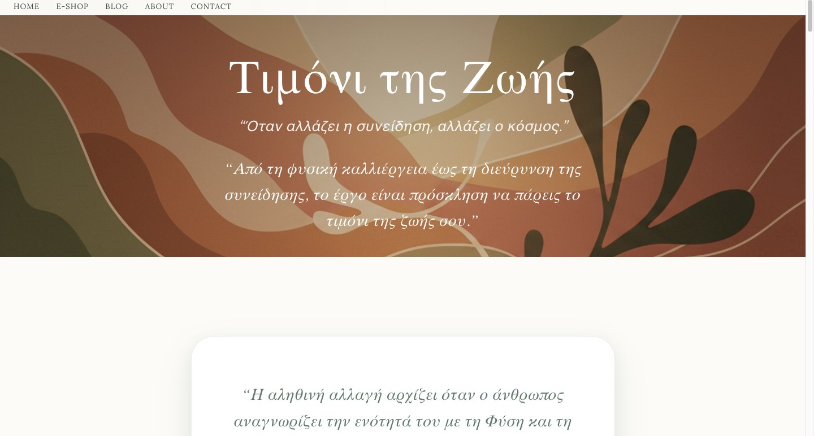
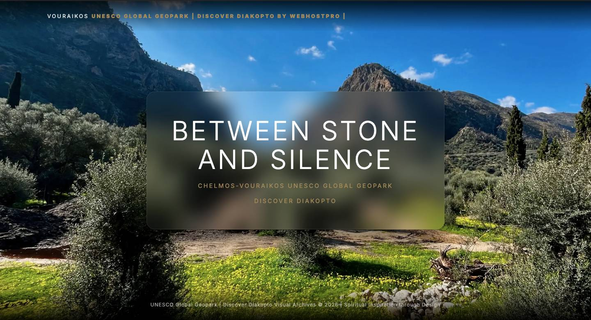
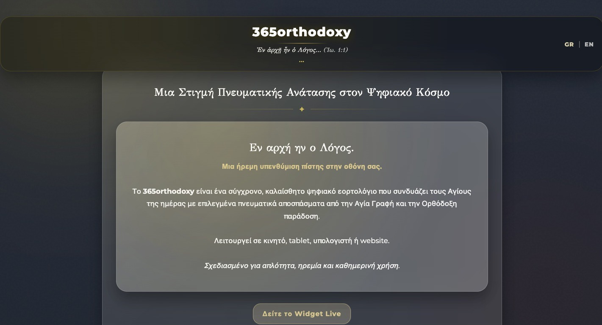

Destination Feature
Destination Feature
Discover Diakopto
Προορισμός με χαρακτήρα, αφηγηματική εμπειρία και σύγχρονο UI. Εστίαση σε visual storytelling και responsive design.
Δες το projectΕπιλεγμενα Εργα
Παρακάτω δεν θα δεις απλώς αισθητικές κατηγορίες. Θα δεις διαφορετικά business scenarios που χρειάζονται άλλη πληροφοριακή ιεραρχία, άλλο conversion flow και διαφορετικό production setup.
Destination Feature
Προορισμός με χαρακτήρα, αφηγηματική εμπειρία και σύγχρονο UI. Εστίαση σε visual storytelling και responsive design.
Δες το project
Travel StoryΤαξιδιωτική εμπειρία με χαρακτήρα, έμφαση στη διαδρομή και το τοπίο. Καθαρό UI, φωτογραφικό υλικό και διαδραστικά sections.
Δες το project
Business PlatformΣύγχρονη πλατφόρμα για επαγγελματίες. (Περισσότερες λεπτομέρειες και υλικό σύντομα.)
Υπό κατασκευή
Creative DirectionΠεριγραφή και υλικό θα προστεθούν σύντομα.
Υπό κατασκευή
UI/UXΠεριγραφή και υλικό θα προστεθούν σύντομα.
Υπό κατασκευή Web App
Web App
Περιγραφή και υλικό θα προστεθούν σύντομα.
Υπό κατασκευήΠως Σκεφτομαστε
Μελετάμε τι πουλάς, σε ποιον απευθύνεσαι, ποιο είναι το βασικό conversion event και πώς θα στηθεί μια εμπειρία που το υπηρετεί χωρίς οπτικό θόρυβο.
Έμφαση σε trust, positioning, testimonials, υπηρεσίες και σωστή αλληλουχία CTA.
Έμφαση σε καθαρό catalog, product communication, flows και after-launch optimization.
Επομενο Βημα